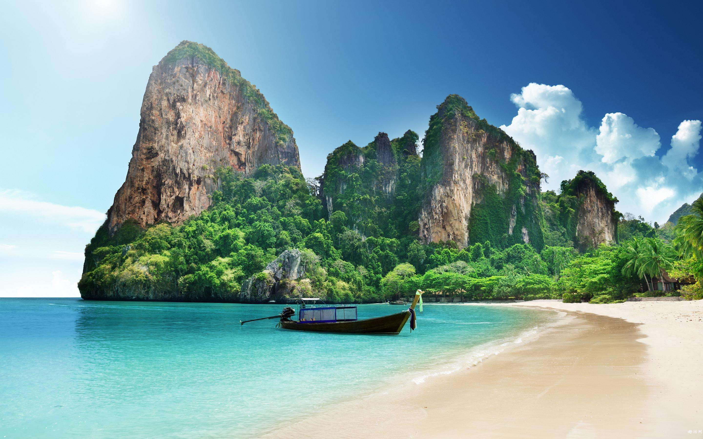
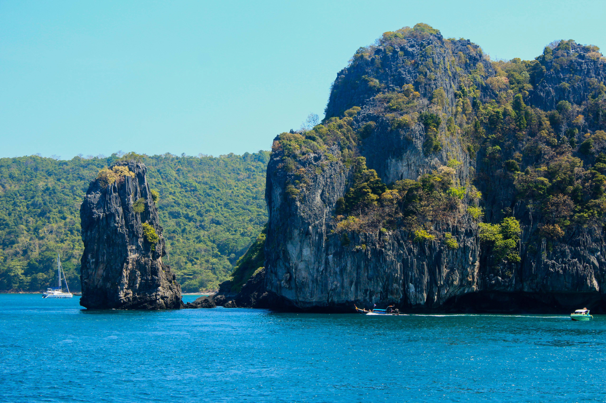
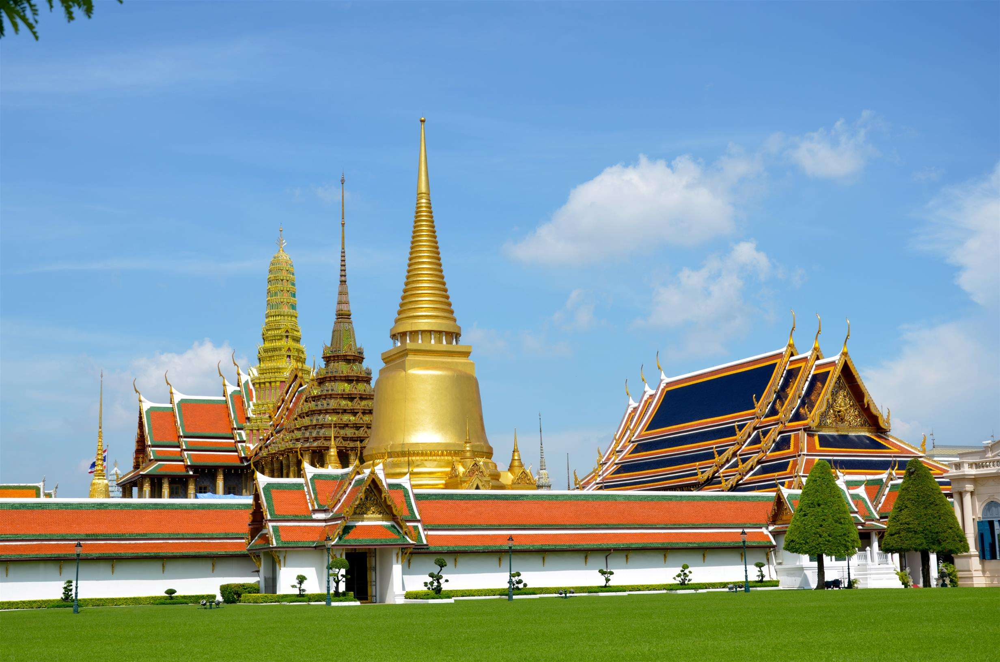
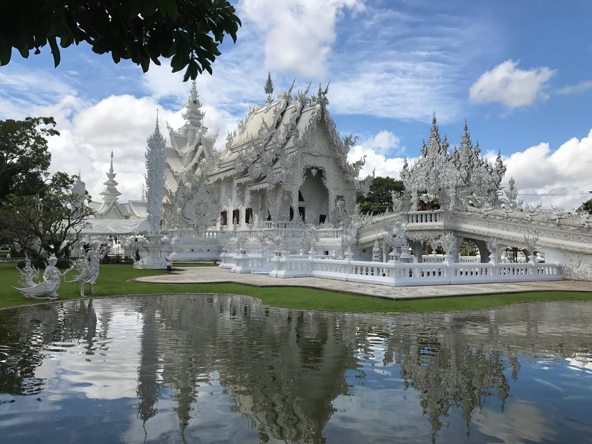

神奇的泰国

普吉岛
普吉岛位于泰国南部，是泰国最大也是开发最早的海岛，11月-4月正是普吉岛最适宜旅行的季节。结束了雨季的普吉岛，每天都是蓝天白云，艳阳高照。普吉岛有宽阔美丽的海滩、洁白无瑕的沙粒、碧绿翡翠的海水普吉岛因有宽阔美丽的海滩、洁白无瑕的沙粒、碧绿翡翠的海水
皮皮岛
皮皮岛位于泰国普吉岛东南约20公里处，是由两个主要岛屿组成的姐妹岛，1983年被定为泰国国家公园。这是一个深受阳光眷宠的地方，柔软洁白的沙滩，宁静碧蓝的海水，鬼斧神工的天然洞穴，未受污染的自然风貌，使得她从普吉岛周围的30余个离岛中脱颖而出，成为近年来炙手可热的旅游度假胜地之一。


大皇宫
大皇宫位于曼谷市中心区，是泰国历代王宫保存最完美、规模最大、最有民族特色的王宫。是曼谷中心内一处大规模古建筑群，计28座。汇集了绘画、雕刻和装饰艺术的精华。曼谷王朝从拉玛一世到八世，均居于大皇宫内，如今该地仅用于举行加冕典礼、宫廷庆祝等仪式。
白龙寺
白龙寺因为它不同于泰国传统的寺庙，它的全身都是白色，还雕刻有数不清的龙，还有各种各样的造型图案，在这些图案上面还镀有银色的金属条带，再看看这些全白的墙壁和闪亮的雕塑，是不是很像黎明和黄昏时夕阳的色彩呢。
